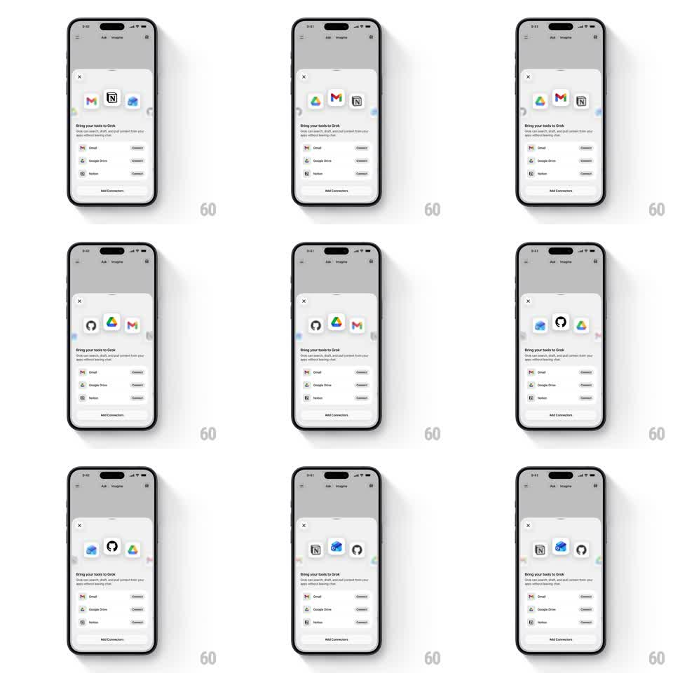

Media
Frame-by-frame

Rebuild this animation 1:1: Grok's connector sheet arc - app icons (Gmail, Notion, Drive, GitHub, OneDrive) orbit in a continuous arc across the top of the onboarding sheet, front icons sharp and receding icons melting into depth-of-field blur.

Rebuild this animation 1:1: Grok's connector sheet arc - app icons (Gmail, Notion, Drive, GitHub, OneDrive) orbit in a continuous arc across the top of the onboarding sheet, front icons sharp and receding icons melting into depth-of-field blur. ## Integration Integration: stack-agnostic spec - springs given as stiffness/damping, timed motions as duration + curve; map every value to your framework and animation library of choice. ## Scene Light onboarding sheet over a dimmed Grok chat: close X top-left, the icon arc stage across the upper third, "Bring your tools to Grok" headline with subcopy, connector rows (Gmail, Google Drive, Notion) with Connect buttons, and an Add Connectors button. ## Motion spec Pattern: orbital icon arc with depth-of-field falloff. - Icons travel a shallow arc (like a wide ellipse seen edge-on), one full loop ~7s, linear and continuous. - Center-front icon: scale 1.0, sharp, full opacity. Icons toward the edges shrink (~0.65), blur progressively (up to 6px), and fade to ~40%. - Icons pass behind the center position with a z-crossing swap - no hard pop when order changes. - The arc runs above static copy and rows; it is ambient, never interactive. ## Calibration - Blur is the signature - edge icons should be soft ghosts, center icon crisp. - Spacing on the arc stays even; no clumping as icons cross. ## Reduced motion Icons hold a static arc arrangement with the depth treatment but no orbit. ## Don't miss - Icons stay upright through the orbit - only position, scale, blur change. - The sheet's grabber and close X stay above the arc, untouched.